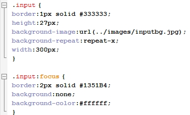

Пример селекторов тегов, идентефикаторов и классов:
Групповые селекторы записываются:
Пример обращения к потомкам, на примере списка:
ul li {
...
}
где тег ul - родитель, а тег li - потомок.
#id_name p a {
...
}
- это означает: выбрать ссылки <a> внутри тегов абзаца <p>, которые находятся в объекте с индефикатором id="id_name".
#divName + p {
...
}
- это означает: выбрать следуюющий абзац <p>, который идёт после объекта с индефикатором id="divName". (НЕ ВНУТРИ ЭТОГО ОБЪЕКТА, А СНАРУЖИ ЗА НИМ)
Выбор дочерних тэгов (ВЛОЖЕННЫЕ ТЕГИ В ДОЧЕРНИЕ НЕ ВЫБИРАЮТСЯ):
#divName > img {
...
}
- это означает: выбрать картинки внутри объекта с индефикатором id="divName", но не выбирать картинки которые вложены в других вложенных тегах этого же объекта.
Пример псевдоселекторов:
a:link - непосещённая ссылка
a:visited - посещённая ссылка
a:hover - при наведении мыши
a:active - при нажатии
Пример использования шрифтов (font-family):
Шрифты делятся на с засечками (serif), без засечек (sans-serif), моноширные (monospace, каждая буква занимает одну и ту же ширину) и курсив (cursive).
Строка кода: font-family: Verdana, Arial, sans-serif; означает, что берётся шрифт Verdana если его нет, то Arial, если и этого нету, то из семейства sans-serif
Если название шрифта состоит из нескольких слов, его заключают в кавычки - "Comic Sans MS"
Пример размеров и оформления шрифтов (font-size):
em - пришло из книгопечатния
pt - пришло из типографии
Строка кода: font-style: italic;
italic - курсив
Строка кода: font-weight: normal; задает насыщенность(жирность)
normal - обычный
bold - жирный
100-900 - шаг 100, normal=400, bold=700, редко используется
Пример подчёркивания (text-decoration):
text-decoration: blink
text-decoration: inherit
text-decoration: line-through
text-decoration: none
text-decoration: overline
text-decoration: underline
Выравнивание текста (text-align):
Красная строка - отсуп первой строки абзаца (text-indent):
Междустрочный интервал (line-height):
line-height:5px; - в пикселях.
line-height:2.5; - множитель от текущего размера.
line-height:100%; - в процентах
line-height:normal;
Интервал между словами(line-height):
word-spacing:normal - задается только в пикселях 12px. Если задано: text-align: justify;(по всей ширине), то word-spacing игнорируется
Интервал между буквами
Изменение регистра
Сокращённая запись
Расширенная запись:font-style:italic;
font-weight:bold;
font-size:16px;
line-height:80px;
font-family:Arial;
Сокращённая запись: font: italic bold 16px/80px Arial;
Рамки
border-top-width:2px;
border-top-style:dotted;
border-top-color:#0033FF;
Сокращённая запись: border-top:2px dotted #0033FF;
Просто Контур (в отличии от Рамки - не влияет на размеры объектов) outline:4px solid #4B4B4B;
Оформление списка:
Стили маркеров по тегу list-style-type
Картинка вместо маркера с тегом list-style-image
команда list-style-position:inside; делает так, чтобы маркеры были внутри списка. Изначально маркеры находятся снаружию Пример:
Для
list-style-image:url(../_img/Arrow.png);
list-style-position:inside;
сокращённая запись:
list-style:inside url(../_img/Arrow.png);
Наследование:
Блочная модель, margin и padding:
развёрнутая запись:
padding-top:20px;
padding-right:30px;
padding-bottom:40px;
padding-left:50px;
Сокращённая:
padding:20px 30px 40px 50px; (сверху ; справа ; снизу ; слева)
margin:20px auto 40px auto; (сверху ; справа ; снизу ; слева) справа и слева подобраны автоматически равными
padding:20px 50px; (сверху и снизу ; справа и слева)
margin:20px 50px; (сверху и снизу ; справа и слева)
Тег width (px или % от родителя) задает ширину для содержимого блока. margin и padding задаются ОТДЕЛЬНО!
Примеры:
При не заданных width и height
При заданных width и height
При заданных width, height и overflow:hidden
При заданных width, height и overflow:scroll
При заданных width, height и overflow:auto
Блочная и встроенная модель
Разница, между блочной (div, p, h1,...)
и встроенной(span, a, strong,...) моделью:
Чтобы блочный элемент сделать встроенным, в CSS прописать: display:inline;
Чтобы встроенный элемент сделать блочным, в CSS прописать: display:block;
Оформление
Фоновый цвет:background-color:#B4B4B4;
Фоновая картинка:background-image:url(../img/fon.jpg);
Управление повторением фоновой картинки:background-repeat:no-repeat | repeat-x | repeat-y;
Позицирование фонового изображения:background-position: left center;
background-position: 50px 80px;
Фиксация фонового изображения при прокурчивании:background-attachment: fixed; при этом позициррование уже изменяется/идёт не от блока div, а от окна браузера
Сокращённая запись:background: url(../img/image.jpg) no-repeat fixed 0 120px;
Оформление таблиц, с помощью CSS
border-collapse: collapse; - уберает растояние между линиями в таблице, делая линии одинарными | а не двойными ||
Оформление форм, с помощью CSS
ключевое слово в html-файле for="name0001" относится к id="name0001" Пример:
<label for="name0001">_______</label>
<input type="text" name="__" id="name0001">______</label>
Пример для рамок по тегу fieldset:
Одному объекту можно дать два класса через пробел, пример:
<p class="nameOfclass01 nameOfclass02">
Пример input'ов:
В теге textarea тоже есть focus. В тестовых областях (textarea, input) font может не наследоваться от свойств body - их нужно прописывать дополнительно.
Для интернет-эксплорера для нестандартных input, нужно дополнительно в CSS прописать: line-height:27px;, иначе текст будет не по центру.
Пример изменения курсора, при наведениии мыши:
.cursor {
cursor:crosshair;
}
Свойство обтекания float
#d_red, #d_green, #d_blue, #d_yellow, #d_white {
border:3px solid #000000;
padding-left: 20px;
}
#d_red {
margin:20px 20px 0 20px;
background-color:#FF0000;
}
#d_green {
width:250px;
margin:20px 20px 20px 20px;
background-color:#00CC33;
float:left;
}
#d_blue {
width:250px;
margin:20px 20px 20px 20px;
background-color:#00FFFF;
float:right;
}
#d_yellow {
width: 300px;
margin:20px auto 20px auto;
background-color:#FFFF00;
float:none;
}
#d_white {
margin:20px 20px 20px 20px;
float:none;
}
В CSS clear: both | left | right ; - очистка обтекания. (В html-файле, обычно создается пустой тег div в котором прописывается этот класс с clear)
ВИДЕО: Курс CSS - Урок №30. Свойство FLOAT. Введение. (Евгений Попов)
ВИДЕО: Курс CSS - Урок №31. Создание каркаса на основе Float. (Евгений Попов)
ВИДЕО: Курс CSS - Урок №32. (Евгений Попов)
Колонки одной высоты
1. Подключение скриптов в области head в html-файле:
<head>
<script src="_js/equalHeight.js" type="text/javascript"> </script>
<script src="_js/jquery-1.5.min.js" type="text/javascript"> </script>
</head>
2. В файле equalHeight.js в строке setEqualHeight($("#_____,#______")); прописать id нужных блоков:
$(document).ready(function() {
function setEqualHeight(columns)
{
var tallestcolumn = 0;
columns.each(
function() {
currentHeight = $(this).height();
if(currentHeight > tallestcolumn) {
tallestcolumn = currentHeight;
} } );
columns.height(tallestcolumn);
}
setEqualHeight($("#d_green,#d_yellow,#d_blue"));
});
Две float-колонки одинаковой высоты
ВИДЕО: Курс CSS - Урок №33. Колонки одной высоты. (Евгений Попов)
Позиционирование
Абсолютное позиционирование position:absolute; - позиционирование относительно окна браузера. Координаты задаются с помощью top:26px; bottom:26px; right:26px; left:26px;. Если блок с абсолютным позиционированием поместить в другой блок, который тоже имеет абсолютное позиционирование - то он уже будет позиционироваться относительно родительского блока, а не браузера!
Относительное позиционирование position:relative; относительно позиции, где он стоит. Блок с relative как бы преподнимается над остальным контентом, но его место другие блоки не занимают. Пример:
#d_absolute {
position:absolute;
background-color:#FFFF99;
left:200px;
top:-50px;
width:100px;
height:100px;
border:2px dotted #000000;
padding:20px 10px;
}
#d_relative {
position:relative;
background-color:#CC6600;
width:500px;
height:250px;
border:2px dotted #000000;
margin:75px 10px 75px 10px;
padding:20px 10px;
}
У родительского блока #d_relative - position:relative; у блока #d_absolute - position:absolute;
Преимущество у relative перед absolute в том, что при смене размеров разрешения браузера, - блок не съедит относительно своего позиционирования
Фиксированное позиционирование position:fixed; относительно экрана браузера всегда!!! даже если есть вложенные блоки. Пример:
#d_fixed {
position:fixed;
left:0px;
top:50px;
}
ВИДЕО: Курс CSS - Урок №34. Позиционирование. Введение. (Евгений Попов)
ВИДЕО: Курс CSS - Урок №35. Абсолютное позиционирование. (Евгений Попов)
ВИДЕО: Курс CSS - Урок №36. Относительное позиционирование. (Евгений Попов)
ВИДЕО: Курс CSS - Урок №37. Фиксированное позиционирование. (Евгений Попов)
ВАЖНО: position и float использовать ОДНОВРЕМЕННО НЕЛЬЗЯ !!!
Z-Индексы
#z0001 {
z-index:1;
background-color:#0000FF;
}
#z0002 {
z-index:2;
top:100px;
left:50px;
background-color:#FFFF00;
}
#z0003 {
z-index:3;
top:230px;
left:100px;
background-color:#FFFFFF;
}
#z0004 {
z-index:4;
top:370px;
left:150px;
background-color:#FF33FF;
}
#z0005 {
z-index:3;
top:250px;
left:340px;
background-color:#339966;
text-align:right;
}
#z0006 {
z-index:2;
top:100px;
left:475px;
background-color:#FF6600;
text-align:right;
}
#z0007 {
z-index:1;
left:550px;
top:-50px;
background-color:#00CC99;
text-align:right;
}
ВИДЕО: Курс CSS - Урок №38. Z-индексы. (Евгений Попов)
Видимость элементов
visibility: visible | hidden | collapse | inherit; Предназначен для отображения или скрытия элемента, включая рамку вокруг него и фон. При скрытии элемента, хотя он и становится не виден, место, которое элемент занимает, остается за ним. Если предполагается вывод разных элементов в одно и то же место экрана, для обхода этой особенности следует использовать абсолютное позиционирование или воспользоваться свойством display.
visible - Отображает элемент как видимый. hidden - Элемент становится невидимым или правильней сказать, полностью прозрачным, поскольку он продолжает участвовать в форматировании страницы. collapse - Если это значение применяется не к строкам или колонкам таблицы, то результат его использования будет таким же, как hidden. В случае использования collapse для содержимого ячеек таблиц, то они реагируют, словно к ним было добавлено display: none. Иными словами, заданные строки и колонки убираются, а таблица перестраивается по новой. Это значение не поддерживается браузером Internet Explorer. inherit - Наследует значение родителя.
display: block | inline | inline-block | inline-table | list-item | none | run-in | table | table-caption | table-cell | table-column-group | table-column | table-footer-group | table-header-group | table-row | table-row-group Список возможных значений этого свойства, понимаемый разными браузерами очень короткий — block, inline, list-item и none. Все остальные допустимые значения поддерживаются браузерами выборочно. В табл. 1 приведены некоторые популярные браузеры и их поддержка различных значений.
ВИДЕО: Курс CSS - Урок №39. Видимость элементов. (Евгений Попов)
Максимальная и минимальная ширина сайта
Если не задано жостко ширана блоков/обёртки width то при уменьшении окна - дизайн сайта будет сыпаться, а при увелечении разтягиваться до неудобного чтения контента
min-width - Устанавливает минимальную ширину элемента. Если окно браузера по ширине становится меньше заданной минимальной ширины элемента, то ширина элемента остается неизменной, а в окне появляется горизонтальная полоса прокрутки.
max-width - Устанавливает максимальную ширину элемента. Значение ширины элемента будет вычисляться в зависимости от значений установленных свойств width, max-width и min-width.
min-height max-height - Устанавливает минимальную и максимальную высоту элемента. Значение высоты элемента будет вычисляться в зависимости от значений установленных свойств height, max-height и min-height.
*** Если не задана width, а только min-width то блок растягивается на всю ширину окна, но при уменьшении появляются полосы прокрутки и дизайн не сыпется.
ВИДЕО: Курс CSS - Урок №40. Максимальная и минимальная ширина сайта. (Евгений Попов)
Варианты решения проблем с Интернет Эксплорером
ВИДЕО: Курс CSS - Урок №42. Решение проблем IE6. (Евгений Попов)
Варианты подключения CSS-сценария
Варинат № 1. Один CSS-файл в области <head> html-файла
<head>
<link href="folder/style.css" type="text/css" rel="stylesheet">
</head>
Варинат № 2. Расписать CSS-сценарий в области <head> или любой другой области кода html-файла
<head>
<style>
body {
background-color: #40E7FA;
}
</style>
</head>
Варинат № 3. В CSS-файле подключить другие CSS-файлы
/* CSS Document */
@import url("../file.css");
body {
}
.wrapper {
}
Варинат № 4. Внутри одного из тегов html-файла
<p style="color:#9932CC; font-family:"Times New Roman", Times, serif;"> ***текст*** </p>
ВИДЕО: Курс CSS - Урок №43. Два способа подключения стилей. (Евгений Попов)
Варианты курсора мыши
---------------------------------------
***inherit - позволяет наследовать свойство от родителя, для ненаследуемых свойств (например, padding)
p, #name, .nameOfClass {
...
}